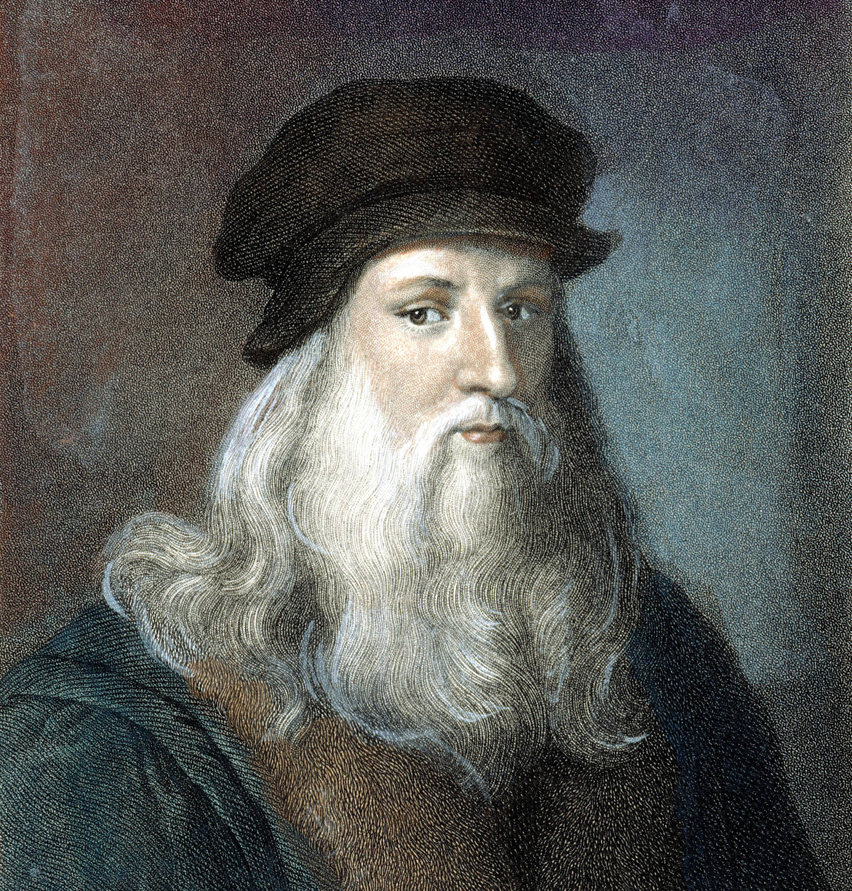
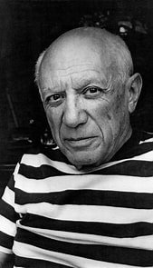

Discover the lives and masterpieces of legendary artists whose creativity and imagination transformed the world of art.

Born: 15 April 1452
Died: 2 May 1519
Nationality: Italian
Profession: Painter, Inventor & Scientist
Leonardo da Vinci was one of the greatest artists of the Renaissance. His extraordinary talents in painting, engineering, anatomy, and science made him one of the most influential figures in history.

Born: 25 October 1881
Died: 8 April 1973
Nationality: Spanish
Profession: Painter & Sculptor
Pablo Picasso was one of the most influential artists of the 20th century. He co-founded the Cubist movement and created thousands of paintings, sculptures, and drawings during his lifetime.